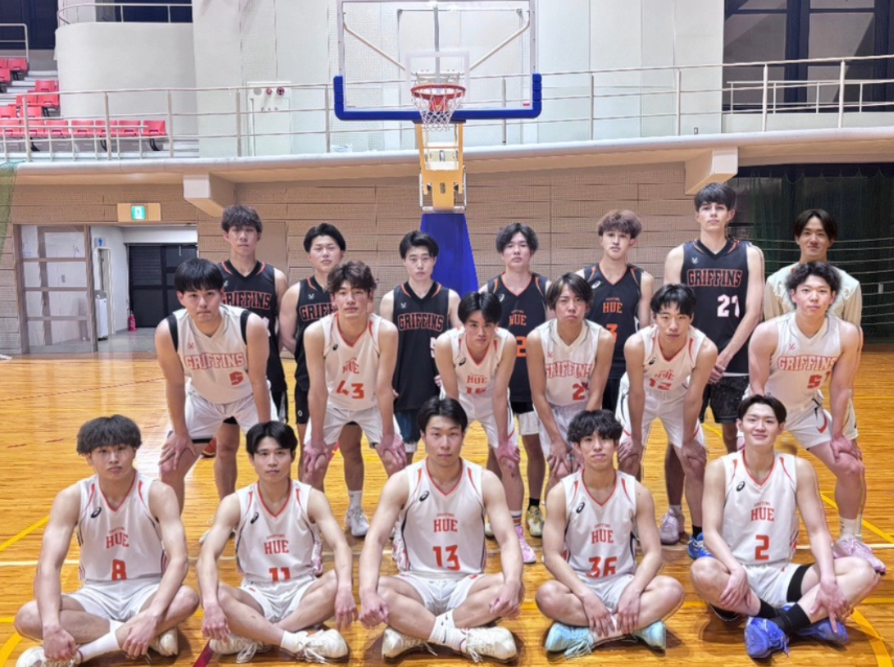

GRIFFINS
広島経済大学男子バスケットボール部
お知らせ
- 広島県大学バスケットボール親睦試合 場所 広島経済大学
- 広島県大学バスケットボール親睦試合 場所 広島経済大学

広島経済大学男子バスケットボール部
| 日付 | 大会名 | 対戦相手 | スコア |
|---|---|---|---|
| 2026-05-31 | 第76回西日本学生バスケットボール大会 | 関西外国語大学 | 60－70 負け |
| 2026-05‐17 | 第4回全日本大学バスケットボール新人戦中国地区予選大会 | 倉敷芸術科学大学 | 71－96 負け |
| 2026-05-16 | 第4回全日本大学バスケットボール新人戦中国地区予選大会 | 広島工業大学 | 81－74 勝ち |